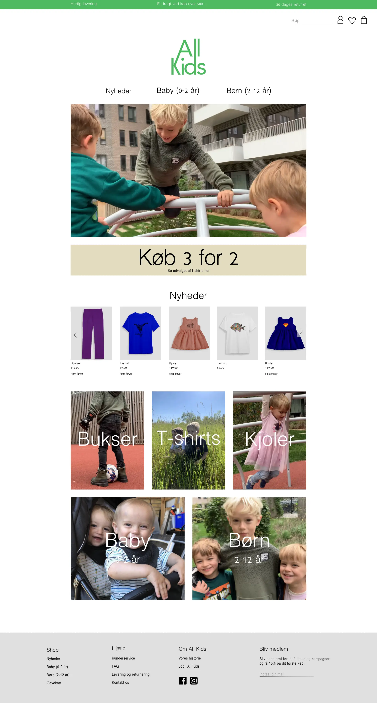
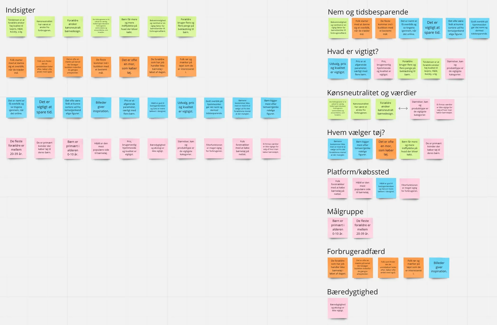
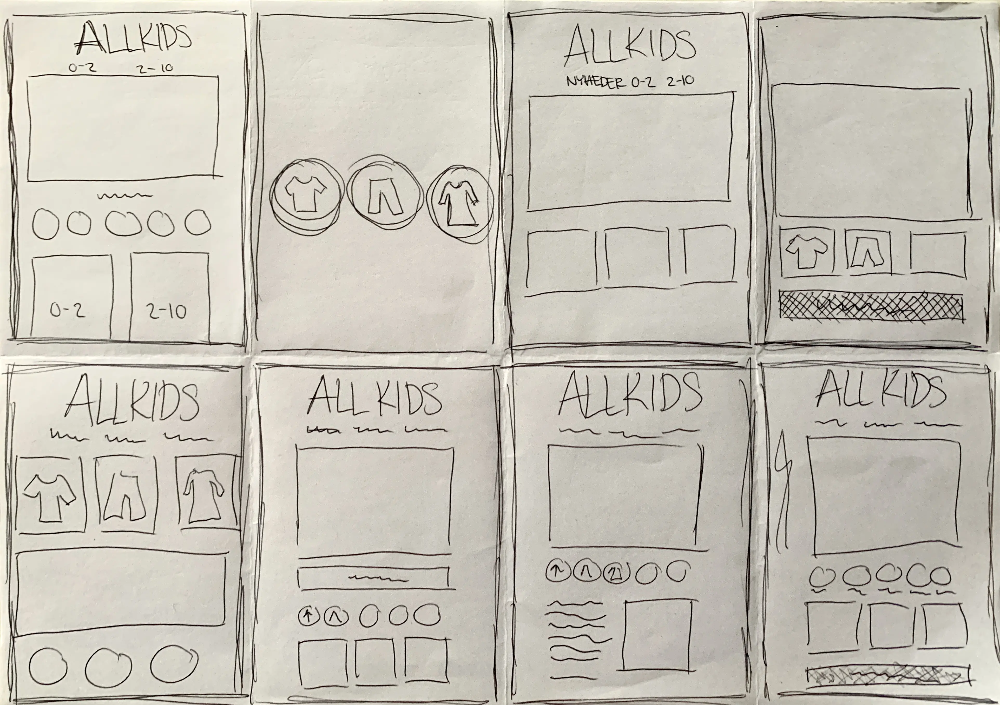
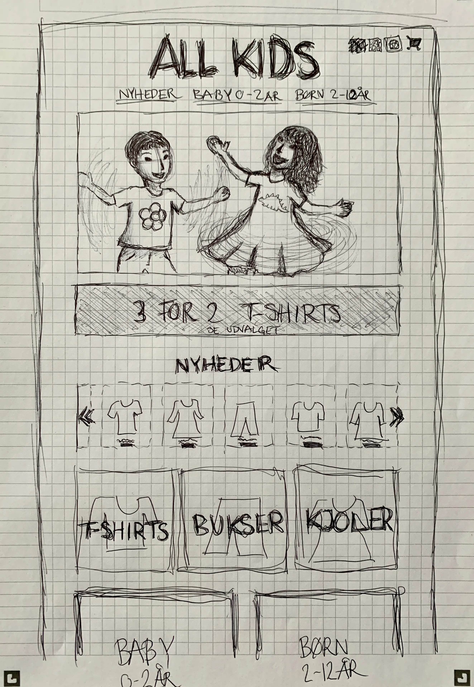
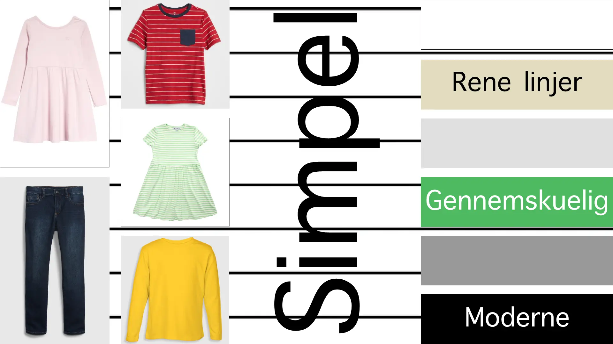
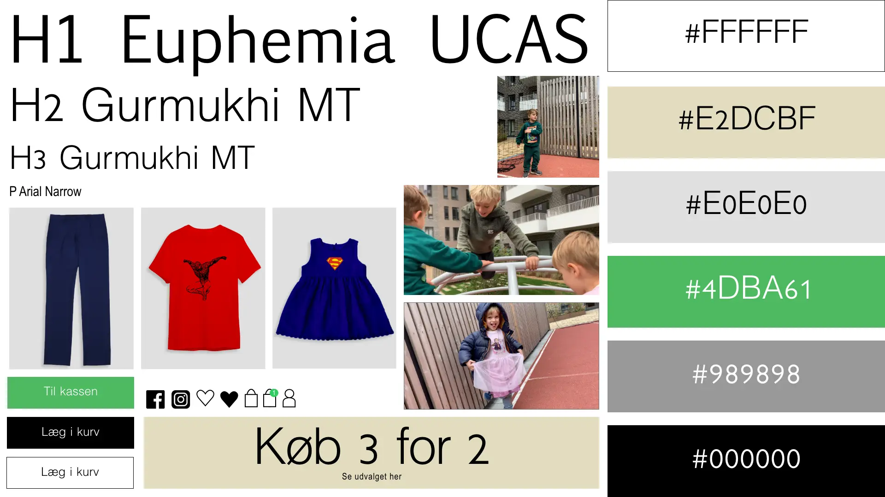

Grundlæggende UX
Løsning
I dette tema lærte jeg at anvende udvalgte UX-metoder, indsamling og analyse af data, metoder til design af digitale brugeroplevelser, samt præsentere resultater.
For denne opgave skulle jeg udarbejde et koncept og definere afsender, målgruppe og USP. Konceptet skulle bygges omkring salg af t-shirts og to andre produkter, hvor jeg valgte kønsneutralt børnetøj som mit produkt. Herefter lavede jeg research – desk research, survey, observartion og interview omkring dette, og det lavede så en indsigtsdreven iteration og tilrettede konceptet efter de indsigter jeg havde indsamlet.
I UI-processen benyttede jeg principperne fra sprintprocessen, og resultatet af map og sketch fasens crazy8s og solutions sketch kan ses her til højre, og det var sidstnævnte jeg tog udgangspunkt i min prototype, som jeg lavede i xd. Jeg lavede et moodboard med udgangspunkt i de indsigter jeg havde fået gennem min research, og jeg gik med et moderne, let gennemskuelig og genkendeligt design. Dette skulle også skinne igennem på copy og minicopy, samt fotostilen, hvor der er brugt klare farver på produktbillederne. Forsidens video skulle være naturlig og udstråle USP’en om at AllKids er børnetøj til alle børn og alle familier.
Ved testing af prototypen lavede jeg tænk højt-test med 3 forsøgspersoner, hvor jeg fik indsigter om bl.a. ikke tydelig nok information omkring levering og retur, som jeg herefter fik gjort tydeligere.
#løsning.mockup
.map
.crazy8
.skitse
.moodboard
.styletile
Pitch
Pitchen strukturerede jeg således, at jeg først fortalte om min UX-research og om nogle af de indsigter jeg har fået, og komme hurtigt frem til hvorfor lige netop dette koncept er vigtigt. Herefter præsenterede jeg kroppen af produktgrupper, målgruppe, USP, designvalg og præsentation af selve prototypen. Under denne, fortalte jeg om de genkendelige elementer, men ville set i bakspejlet gerne have fokuseret mere på forsidevideoen, da den bærer en stor del af budskabet uden at gøre brug af ordet ’kønsneutralt’, hvilket også var den feedback jeg fik til præsentationen.
#pitch